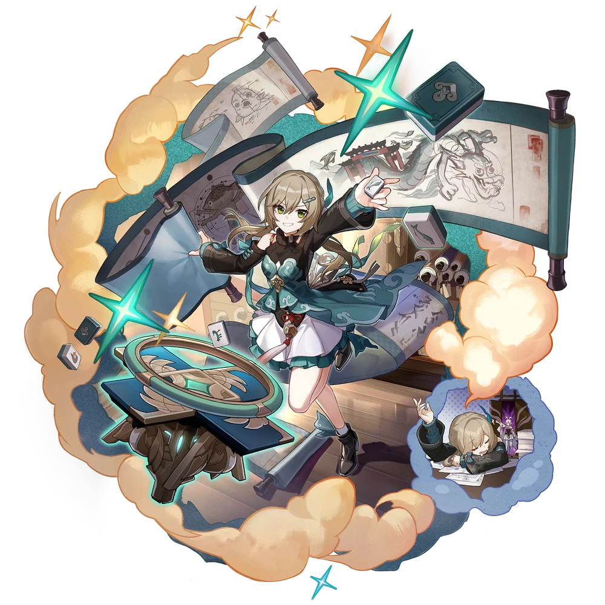

| Nome | Qingque |
|---|---|
| Elemento | Quântico | Raridade | ✦ ✦ ✦ ✦ |
| Caminho | A Erudição |
| Sexo | Fêmea |
| Especie | Humano |
| Facção | O Xianzhou Luofu e Comissão de Adivinhação | Mundo | O Xianzhou Luofu | Como obter | completando o Estágio 3 da Memória do Salão Esquecido, Qualquer Warp Banner | Data de Lançamento | 2023-04-26 | Adicionado pela primeira vez | Versão 0.9.0 |
Ascensões e estatísticas
| Fase de Ascensão | Level | Base HP | Base ATK | Base DEF | Base SPD |
|---|---|---|---|---|---|
| 0✦ | 1/20 | 139 | 88 | 60 | 98 |
| 20/20 | 271 | 173 | 117 | 98 | |
| 1✦ | 20/30 | 327 | 208 | 141 | 98 |
| 30/30 | 396 | 253 | 171 | 98 | |
| 2✦ | 30/40 | 452 | 288 | 195 | 98 |
| 40/40 | 522 | 333 | 225 | 98 | |
| 3✦ | 40/50 | 577 | 368 | 249 | 98 |
| 50/50 | 647 | 412 | 279 | 98 | |
| 4✦ | 50/60 | 702 | 448 | 303 | 98 |
| 60/60 | 772 | 492 | 333 | 98 | |
| 5✦ | 60/70 | 828 | 528 | 357 | 98 |
| 70/70 | 897 | 572 | 387 | 98 | |
| 6✦ | 70/80 | 953 | 608 | 411 | 98 |
| 80/80 | 1,023 | 652 | 441 | 98 |
| Nível | Custo de Evolução | Materiais de Ascensão do Personagem | Materiais Necessários |
|---|---|---|---|
| 0 → 1 ✦ |  3,200 3,200 |
 4 4 |
|
| 1 → 2 ✦ | 6,400 |
8 |
|
| 2 → 3 ✦ | 12,800 |
 2 2 |
 5 5 |
| 3 → 4 ✦ | 32,000 |
5 |
8 |
| 4 → 5 ✦ | 64,400 |
15 |
 5 5 |
| 5 → 6 ✦ | 128,000 |
28 |
7 |
Habilidades de combate
| Icone | Tipo | Nome | Descrição | Marcação | Energia | Resistência DMG |
|---|---|---|---|---|---|---|
| ATK básico | Colheita de Flores | Joga 1 peça de jade do naipe com o menor número de peças na mão para causar Quantum DMG igual a 50%–130% do ATK de Qingque a um único inimigo. | Alvo único | Geração: 20 | 30 | |
| ATK básico | Cereja no Topo! | Causa Quantum DMG igual a 120%–312% do ATK de Qingque a um único inimigo e causa Quantum DMG igual a 50%–130% do ATK de Qingque aos inimigos adjacentes a ele. "Cereja no topo!" não pode recuperar Pontos de Habilidade. | Explosão | Geração: 20 | 60 (Principal) 30 (Adjacente) | |
| Skill | Uma Colher de Lua | Imediatamente compra 2 peças de jade e aumenta DMG em 14%–35% até o final do turno atual. Este efeito pode acumular até 4 vezes. O turno não terminará depois que esta Habilidade for usada. | Melhorar | Geração: 30 | ||
| Ultimate | Um Quarteto? Woo-hoo! | Distribui Quantum DMG igual a 120%–240% do ATK de Qingque a todos os inimigos e obtém 4 peças de jade do mesmo naipe. | AoE | Custo: 140 Geração: 5 | 60 | |
| Talento | Jade Celestial | Quando o turno de um aliado começa, Qingque compra aleatoriamente 1 peça de 3 naipes diferentes e pode conter até 4 peças ao mesmo tempo. Se Qingque começar seu turno com 4 peças do mesmo naipe, ela consumirá todas as peças para entrar no estado "Mão Oculta". Enquanto estiver neste estado, Qingque não pode usar sua habilidade novamente. Ao mesmo tempo, o ATK de Qingque aumenta em 36%–90% e seu ATK básico "Coleita de flores" é aprimorado, tornando-se "Cherry on Top!" O estado "Mão escondida" termina depois de usar "Cereja no topo!". | Melhorar | |||
| Técnica | jogo de paciência | Depois de usar a Técnica, Qingque compra 2 peças de jade quando a batalha começa. | Melhorar |
Eidolons
| Icone | Nome da habilidade | Nivel | Descrição |
|---|---|---|---|
| Subir Através das Peças | 1 | Ultimate dá 10% mais DMG. | |
| Dormir Nas Peças | 2 | Cada vez que Draw Tile é acionado, Qingque imediatamente regenera 1 Energia. | |
 |
Leia Entre as Peças | 3 | Nível final +2, até um máximo de Lv. 15. Talento Nv. +2, até um máximo de Lv. 15. |
| Bem nas Peças | 4 | Depois que a Habilidade desse personagem é usada, há uma chance fixa de 24% de ganhar Autarquia, que dura até o final do turno atual. Com Autarky, usando Basic ATK ou Enhanced Basic ATK imediatamente lança 1 ataque de acompanhamento no mesmo alvo, causando Quantum DMG igual a 100% do DMG do Basic ATK anterior (ou Enhanced Basic ATK). | |
| Aposte Pelas Peças | 5 | Habilidade Nv. +2, até um máximo de Lv. 15. ATK Básico Lv. +1, até um máximo de Lv. 10. | |
| Prevaleça Além das Peças | 6 | Recupera 1 ponto de habilidade após usar o ATK básico aprimorado. |
Traços
| Custo Total (1 → 6 para rastreamento de ATK básico) | ||||||
|---|---|---|---|---|---|---|
| 192.000 |
4 |
5 |
5 |
 2 2 |
 6 6 |
 8 8 |
| Custo total (1 → 10 para um rastreamento) | ||||||||
|---|---|---|---|---|---|---|---|---|
| 522.000 |
6 |
10 |
5 |
2 |
12 |
23 |
.webp) 3 3 |
 1 1 |